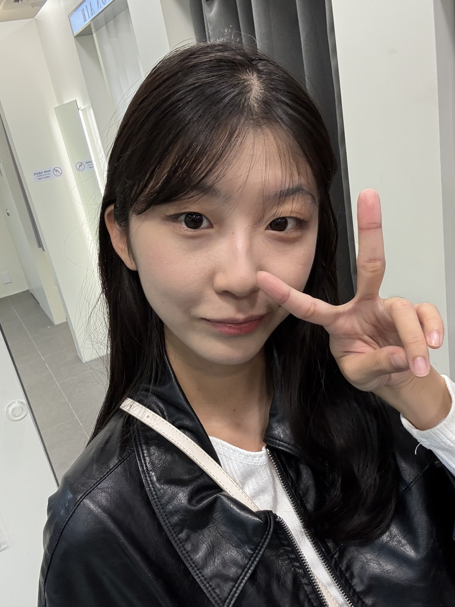
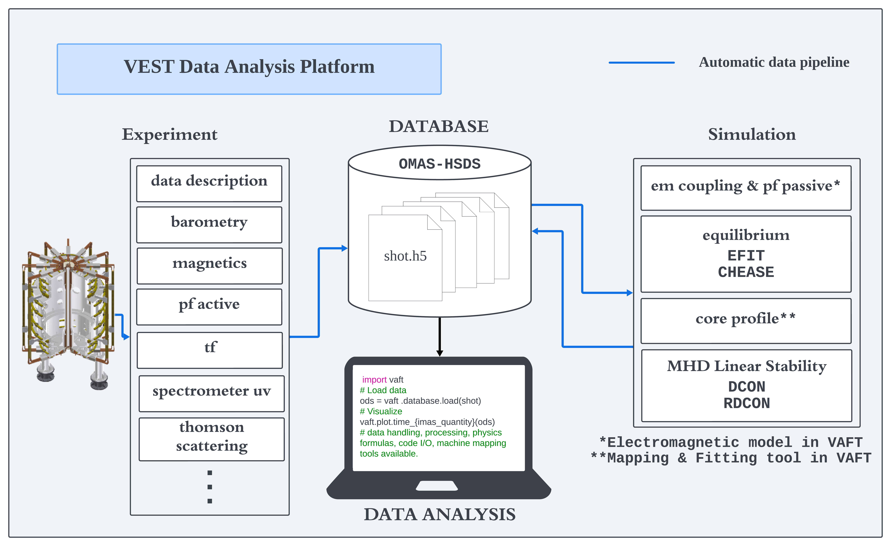
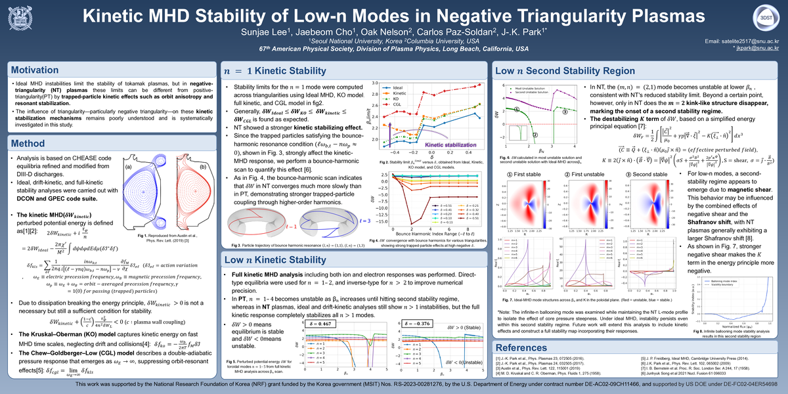
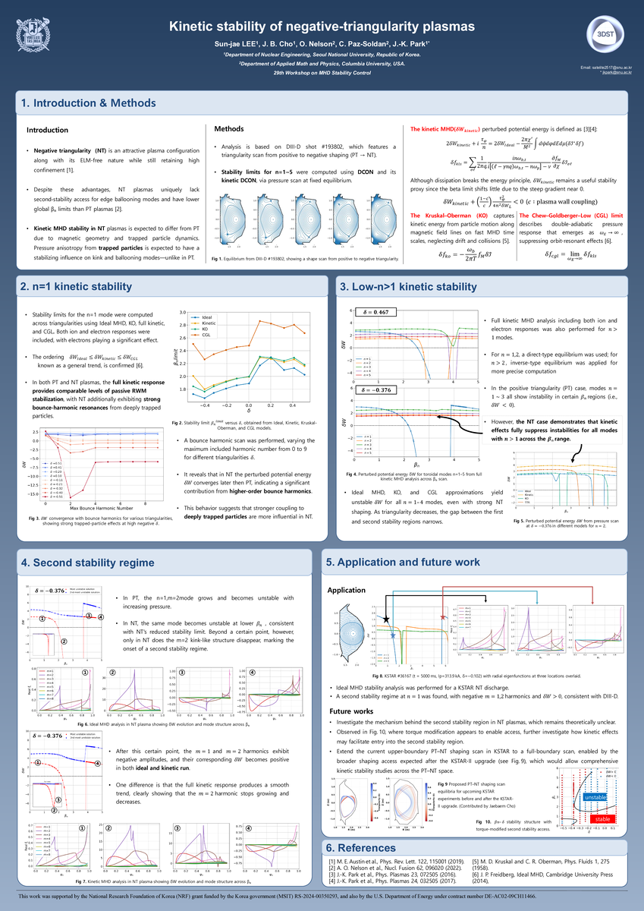
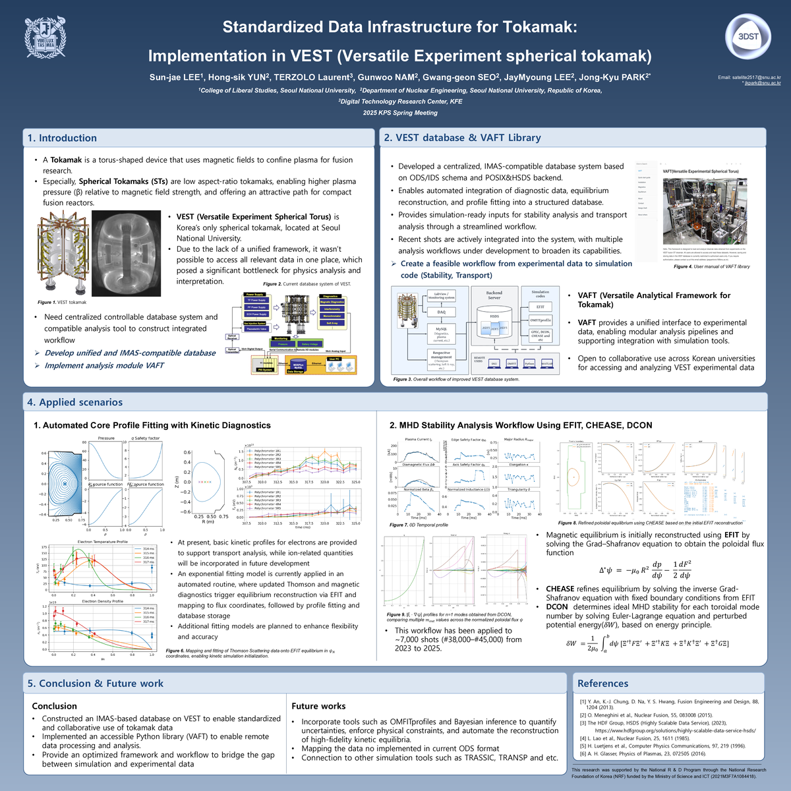
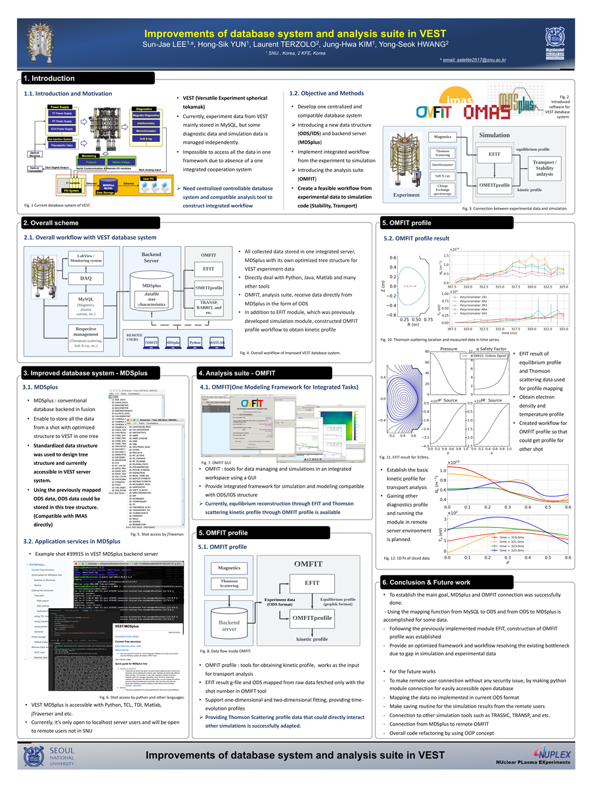

Incoming M.S./Ph.D. student in Applied Physics (Plasma Physics) at Columbia University in the City of New York, beginning in Fall 2026.
I received my B.S. in Computer Science & Engineering and Physics from Seoul National University in February 2026. My research focuses on magnetic-confinement fusion, especially kinetic MHD, negative triangularity plasmas, and AI-based high-performance simulations.
Feel free to reach out.
Visitors
M.S./Ph.D. in Applied Physics (Plasma Physics) | Beginning Fall 2026
B.S. in Computer Science & Engineering and Physics | Mar 2021 - Feb 2026
M.S. in Nuclear Engineering | Mar 2026 - Jul 2026 (withdrew to begin M.S./Ph.D. studies at Columbia University)
3 Dimensional Stellarator & Tokamak Lab, Prof. Jong-Kyu Park | Undergraduate Research Intern | Sep 2024 - Present
Research Student, SNU-PPPL Summer Collaboration | Jul 2025 - Aug 2025
Plasma & Ion Beam Laboratory, Prof. Y. S. Hwang | Undergraduate Research Intern | Sep 2023 - Aug 2024

H.-S. Yun†, S. J. Lee†, L. Jung, et al. (2025).
Developing an IMAS-Compatible Platform for the University-Level Tokamak VEST and Its Application in Operating Characteristics Analysis.
Plasma Physics and Controlled Fusion (Nov 2025)

Kinetic MHD Stability of Low-n Modes in Negative Triangularity Plasmas.
67th Annual Meeting of the APS Division of Plasma Physics, Long Beach, CA, USA (Nov 2025).

Kinetic Stability of Negative-Triangularity Plasmas.
Princeton, NJ, USA (Jul 2025).
Columbia Fusion Research Center.
Reproduced DCON's ideal-MHD stability solver in Julia and developed coordinate-transformation routines for equilibrium-based stability analysis.
Code (Jul 2025)

Standardized Data Infrastructure for Tokamak: Implementation in VEST.
Seoul, Korea (Apr 2025).
Accelerator Programming Summer School.
Built parallel GPU programs in CUDA/C++ and analyzed performance using Nsight Systems.
Code (Aug 2024)

Improvements of Database System and Analysis Suite in VEST.
Seoul, Korea (Jun 2024).